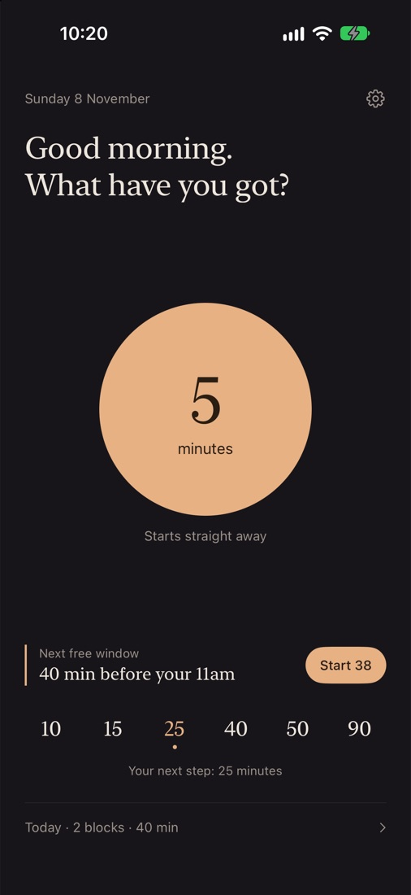
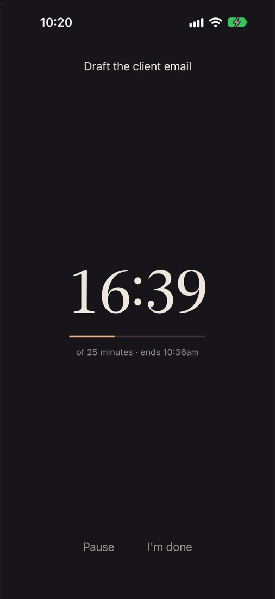
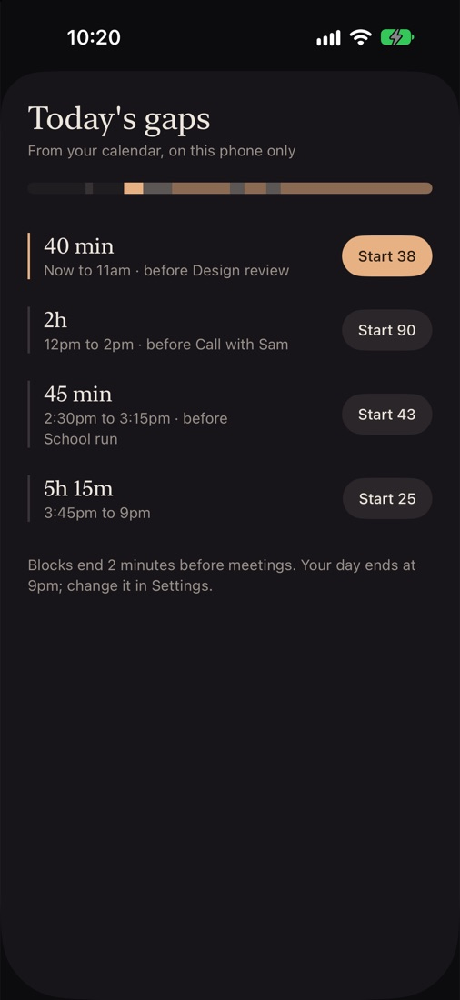
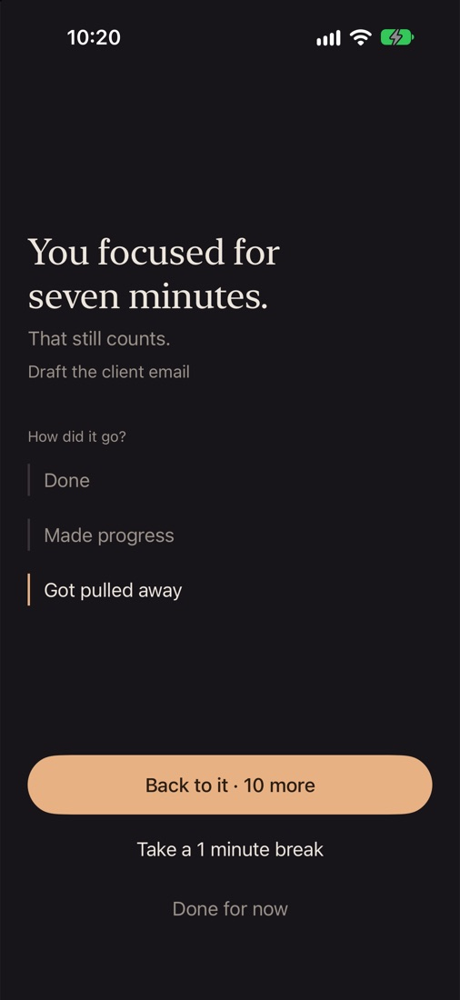
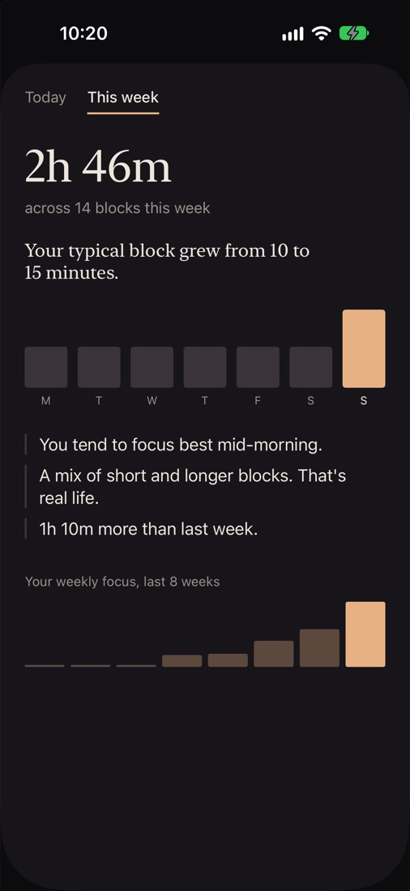

Kindtime starts with the time and attention you actually have, fits focus into the real gaps in your day, and helps you grow from there. Gently.
Free to download, with optional Kindtime Pro. iPhone, iOS 26 and later.

Classic Pomodoro assumes 25 clean minutes and the attention to use them. Most days, you have neither. Kindtime is kind about that.
One tap starts five minutes of focus. No setup, no planning. Starting is the hardest part, so Kindtime makes it effortless.
Still going when it ends? One tap to keep going. Choose 10, 15, 25, 40, 50 or 90 minutes whenever you're ready, with breaks scaled to match.

Kindtime reads your calendar on your iPhone and shows today's real free windows. One tap starts a block that ends two minutes before your next meeting.
"40 min before your 11am. Start 38."

Kids, colleagues, life. Stop early with one tap and it's logged as "got pulled away". Partial blocks still count.
No failure states, no red crosses, no streaks to break.

Kindtime notices the lengths you actually finish and, now and then, suggests one step longer. Say yes, or stay where you are.
"Your typical block grew from 10 to 15 minutes."
A weekly view, not a score: how long you focused, when you focus best, and how broken up your week was.

Kindtime stays out of your way, and out of your data.
The running timer sits on your Lock Screen and in the Dynamic Island, with pause and stop. Start a block from a widget without opening the app.
A one-tap shortcut turns on Do Not Disturb for exactly the length of your block, then switches it off again.
No account, no tracking, no server. Your focus history and your calendar stay on your iPhone. Read the privacy policy.
Everything you need to start is free. Pro fits focus into your real day.
Yours to keep, no time limit
Everything free, plus
£19.99 a year, with a 7-day free trial
£2.99 a month
£39.99 once, yours for good
UK prices. Cancel anytime in Settings.
That's enough to start.